pgm-studio-mapgen · branch opus55-freeform-riftwater · 142 commits · 7–10 October 2026
The Freeform Leap
In three days one agent session built 37 PGM boards in Python without the studio's authoring pipeline, and distilled what they shared into a library, pgmvox. This report takes the branch apart: what was built, how a board is made, what the studio does that pgmvox does not, what pgmvox does that the studio cannot, and what of each a studio 2.0 has to keep.
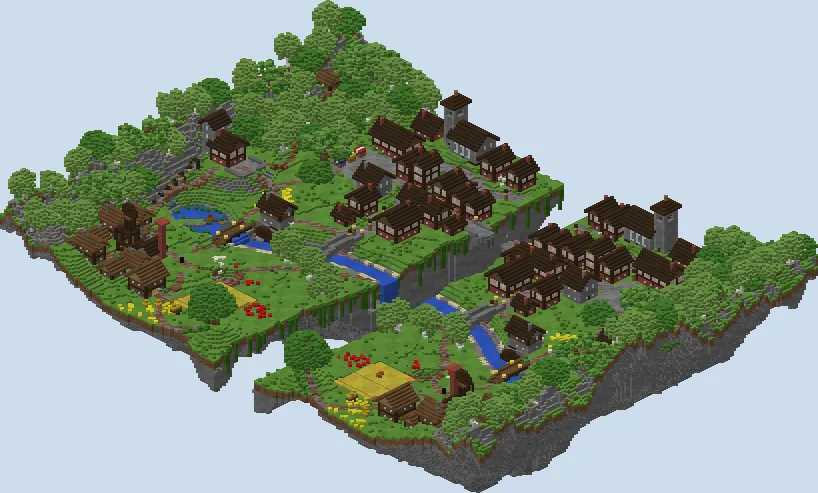
The short answer
No single change made the leap. Seven things did, and they compound. The controlled experiment adds the eighth, which keeps the rest honest: with the model, brief, lessons and twenty minutes held equal, the studio and pgmvox made boards of comparable quality. The leap needed the open substrate and Opus's hours, your review rounds and bespoke code on top of it. The first is the one the others depend on: pgmvox has no vocabulary between the author and the block. The studio's document model is a closed set of words (rectangles on a plan grid, seven prop kinds, axis-aligned houses, a heightfield per layer), so anything outside that set cannot be built at all. In pgmvox a missing thing costs 5 to 60 lines of code. Every other cause is how the agent spent that freedom well.
- An open substrate.
A
Worldis two numpy arrays. A mill wheel, a broken bridge over the void, a cave behind a waterfall, a house at 38°, a karst tower of stacked rings or a ship's hull is just more blocks. Riftwater has 71 block ids and 50 structures of 100+ blocks; the studio's best board on a similar brief has 37 and 31. - Places before relief.
Your ruling “A board is a small world” (committed 21:34 on 7 Oct, one hour before Riftwater began) made every plan a list of places, each with a reason and a way in. The studio runs got the same ruling and improved, but could only build the part of their places the vocabulary had words for.
- The plan is code, checked and drawn.
A per-block raster with storeys, every number printed beside its target, and one annotated sheet with true-scale sections. Lantern Karst went through five plan rounds in 43 minutes before a block was placed.
- The agent looks at each place up close.
The studio already lets an agent see: isometrics, x-rays, sections, and eye views with the real block textures aimed at any named thing. What pgmvox adds is framing. Its isometric takes a box, so every place in the plan gets its own picture at four or five pixels a block; its sections follow any line; one run draws the whole set. A studio isometric is always the whole board, so a house is a few pixels.
- It accumulated.
The 20 bespoke boards were 1,300–4,100 lines each; after an assessment measured 15,800 lines of copies, the library took them over, and the next boards were 350–1,600 lines and 9–29 minutes. Every report ends with a “what I wanted, how hard, what the studio would need” table, and the library grew from those rows.
- Style as a grammar.
Brittlebush and Claywork are rules over sections and faces (courses read down from a rim, an accent bay laid whole or not at all, fills that decline), with the blocks in a separate
Style. That is a layer above the studio's rim/wall/surface/fill buckets, not a replacement for them. - Movement read as 1.8 plays it.
A voxel walk that opens doors, climbs ladders, swims and jumps; a tick model for falls, fall damage, knockback and jump pads; sight lines. These made the arcade boards possible, and they caught faults before anything was built.
What it gave up is exactly what the studio stamps and gates: floating goal markers, build-zone outlines, the defence wall with its chests, the wool room and its loot, a kit paired to the goal's material, a map.xml codec and a 266-rule catalogue. Of the 30 items in your playtest notes, 9 are faults the studio would have prevented by itself, and most of the rest are faults that only exist because pgmvox can build stairs, ladders, joins and forests at all.
What happened, 7–10 October
Everything is one session: 142 commits, 136 of them from a single session id. Commit times are bunched (Riftwater's ten commits fall within 33 minutes), so they show order, not effort.
- 7 Oct 20:26Russetford, Rustwater Vale and Rowan Ford are built in the studio from one brief (an autumn river valley, DTM, 16 a side) by Opus, Sonnet and Haiku.
- 7 Oct 21:34Your ruling lands in
WHAT-A-BOARD-IS-MADE-OF.md: a board is a small world, places each with a reason, things that belong together together, relief layered. - 7 Oct 22:37Riftwater, the first freeform board: plan, sketch and a bridge to the studio's Anvil writer, then terrain, cave, mine, town, mill, bridges, dressing. Built with no studio pipeline.
- 8 Oct 06:15–18:20Nineteen more bespoke boards, each a different idea: Hollow Mesa, Frostholm, Cloudhaven, Hollowcrown (houses at any angle), Stratum (patterned brutalist faces), Lantern Karst, Penstock, Calcite, Riad, Gullhaven, Saltgate (attack/defend), Copperline (payload), Lantern Pass, Sunwell, Lantern Drop, Loomfall, Spark, Curio Square (48 hide-and-seek plots by three models).
- 8 Oct 18:54
SHARED-LIBRARY-ASSESSMENT.md: 15,800 of about 50,000 lines are copies, nine colour tables, a walk whose headroom check could never fire. - 8 Oct 19:09–22:16pgmvox 0.1 → 0.10 in three hours: blocks, orient, world, plan, walk, sight, sketch, render; build and facade; Course; objectives and storeys; landforms and strata; routes; forms; capture boards; under and trees. Riftwater and Lantern Karst are ported onto it.
- 8 Oct 22:00–9 OctTen trial boards, five by Opus and five by Sonnet, one per mode, each 9–29 minutes on the library.
- 9 Oct 11:57–19:21Claywork (CTW, four layout reviews), then the Brittlebush study and its grammar: Brittlebush KotH, Brittlebush III built from a plan drawn in the studio's planner, pgmvox 0.11 → 0.17, Sandreach.
- 9–10 OctPlaytest fixes (Lantern Pass, Lantern Drop, Calcite, Saltgate, Copperline), 0.18
wool_chestsand 0.19defence_chests, the studio's loot copied into the library.
Side by side
The obvious comparison turned out to be a weaker one than it looked. Riftwater was built the same evening as the three studio boards and is also a 16-a-side river valley for DTM, but it was not built to their brief: it is green rather than autumn, has two monuments a team rather than one, and splits the halves with a 20-block void rift rather than a river. It also had the “small world” ruling, which the first studio builds did not. So the table below compares like with nearly-like, and the experiment is the controlled version.
| Measured from the region files | Riftwater pgmvox (bespoke) | Russetford studio · Opus | Rustwater studio · Sonnet | Rowan Ford studio · Haiku |
|---|---|---|---|---|
| Footprint (x × z) | 240 × 176 | 144 × 202 | 108 × 242 | 168 × 92 |
| Height span used | 2–94 | 0–60 | 0–56 | 0–37 |
| Non-air blocks | 1,007,258 | 769,633 | 330,695 | 140,462 |
| Distinct block ids / id+data pairs | 71 / 153 | 37 / 75 | 30 / 64 | 24 / 68 |
| Distinct top-surface kinds | 83 | 51 | 41 | 15 |
| Built structures of 100+ blocks | 50 | 31 | 16 | 10 |
| Air under built roofs (interiors) | 33,178 | 8,938 | 7,227 | 6,314 |
| Air under natural rock (caves) | 9,806 | 2,987 | 1,056 | 0 |
| Beds / torches / ladders | 76 / 244 / 284 | 0 / 0 / 10 | 0 / 0 / 10 | 0 / 0 / 16 |
| Tile entities | 16, all authored | 10–12, all stamped | 12 | 10 |
| Floating goal markers | none | yes | yes | yes |
| map.xml | 77 lines | 149–173 lines, modes, kits, rewards | yes | yes |
| Author code | 3,379 py + 86 C# | 426-line spec | 319 | 118 |
Rendered in the same flat isometric renderer (pgmvox's), the gap is smaller than the studio's textured pictures make it look. Russetford is a composed valley with a river, a bridge, an orchard and a castle ruin. What separates it from Riftwater is density and depth: twice the structures, a town that reads as a town, a sculpted underside, a cave system, interiors with beds and chests.
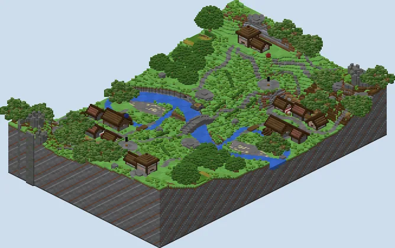
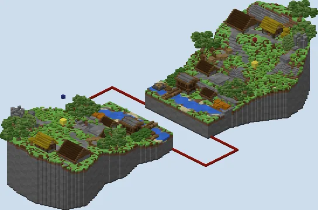
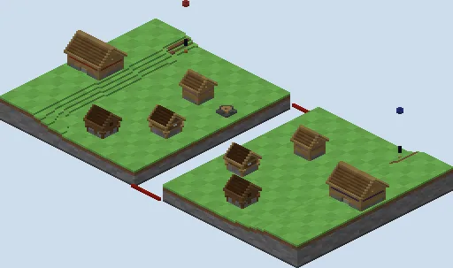
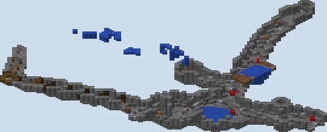
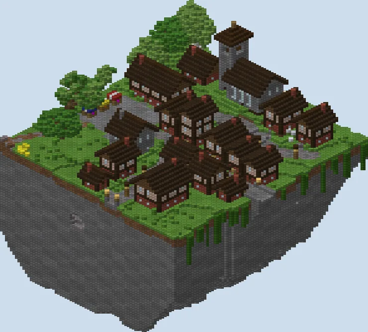
The experiment: one brief, built both ways
Two briefs, Slatefold (capture the wool: a slate hamlet on two terraced hillsides across the void) and Abbeymoor (destroy the monument: abbey hills, a village, a bog, a crypt with a way up near a monument), each built once through a local studio and once with pgmvox. All four builds were by Sonnet, from the same reading list, the same twelve playtest lessons and no author review. The briefs and the full comparison are in analysis/freeform-vs-studio/experiment/.
With the model, the brief, the lessons and about twenty minutes held equal, the two tools made boards of comparable quality. Neither pair shows the gap Riftwater against Russetford suggested, and each builder met almost every lesson. So the leap on the branch took the open substrate and what was spent on it: Opus, hours per board, rounds of your review, and bespoke code (Riftwater is 3,379 lines; these are 1,332 and 1,507). pgmvox raises the ceiling of what a board can be far more than it raises the floor of what a short run makes.
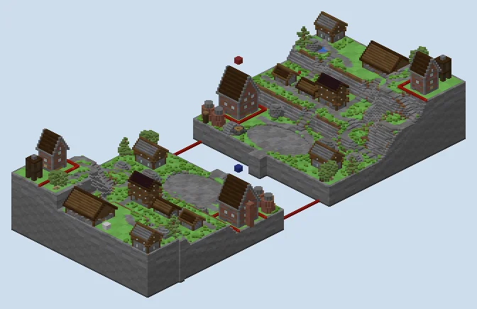
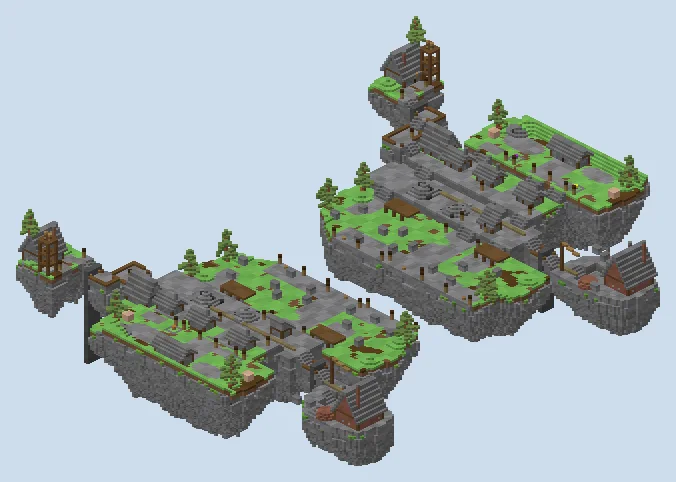
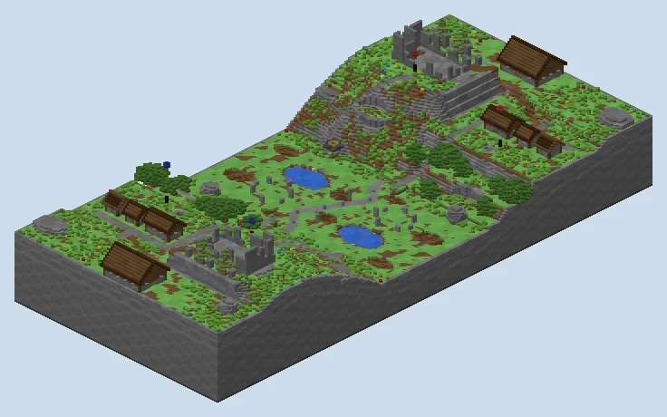
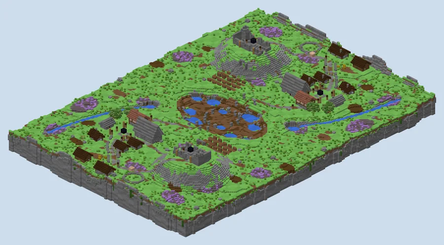
All four in pgmvox's flat-colour renderer.
| Measured from the worlds | Slatefold studio | Slatefold pgmvox | Abbeymoor studio | Abbeymoor pgmvox |
|---|---|---|---|---|
| Height span used | 0–62 | 0–109 | 0–60 | 0–92 |
| Distinct block ids / id+data pairs | 33 / 78 | 39 / 75 | 26 / 52 | 40 / 73 |
| Distinct top-surface kinds | 36 | 47 | 35 | 49 |
| Spread of surface height (std) | 10.4 | 29.3 | 9.5 | 4.2 |
| Chests | 32 | 40 | 4 | 0 |
| Floating goal markers | yes | no | yes | no |
| Build-zone outline | stamped | by hand | n/a | n/a |
| Defence wall with chests | no | yes | n/a | n/a |
| Crypt and passage | n/a | n/a | 8 cuts, 7 lids | carved hall, stair, 60-block passage |
| Authoring code | 355-line spec, 20 stores | 1,332 lines | 404-line spec, 14 stores | 1,507 lines |
| Time to the finished build | ≈23 min | ≈25 min (50 with repairs) | ≈20 min | ≈21 min |
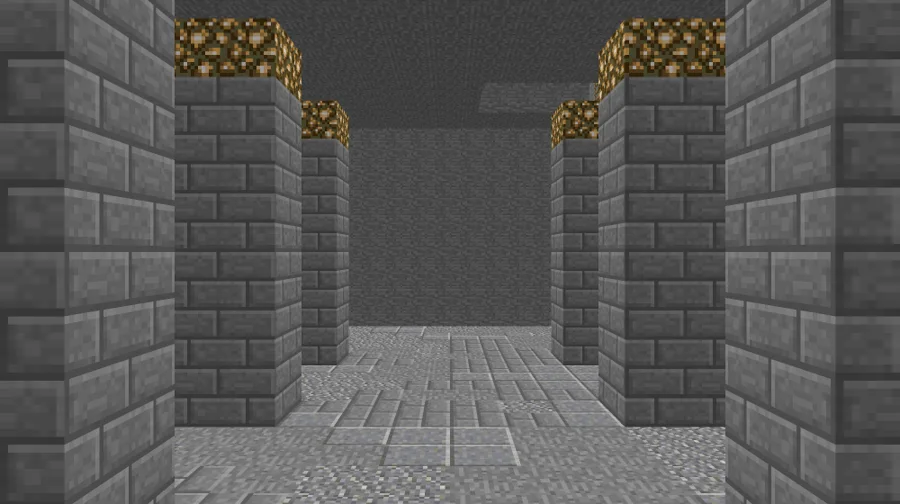
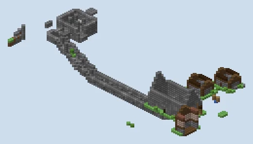
One fault slipped through that the studio refuses: pgmvox's Abbeymoor monuments are 3 × 3 × 3 obsidian cubes, 27 blocks each, effectively unbreakable in a match. The studio caps an obsidian monument at three blocks (DC3). It goes back to the builder with your review.
Each builder hit the other tool's strength as a wall. The studio builder could not build a crypt, ladders, ruins or standing stones except as boxes of blocks, had one wool-room shell per map, and could not fit a defence wall into the plan's wall rules. The pgmvox builder had to write its crypt, defence wall, build-zone outline and objective-visibility check itself, and worked round the house window and door defects. Each is missing the other's half, which is the case for merging them rather than choosing.
One round of your review, on both tools
Your review of the four boards went back to each builder for one revision round, with every point answered or argued (experiment/REVIEW-1.md, plus the obsidian cube as a seventh point for pgmvox's Abbeymoor). Both builders finished in minutes: 3 to 8 per board.
| Board | What your review changed | What got in the way |
|---|---|---|
| Slatefold, studio | Three full-width tiers; both wool rooms moved back onto the middle terrace behind the yard that holds the front; the high bench removed; the unfilled stone disc found to be a pit whose shape flattened its own hollow, now a lake (water 80 → 1,214 blocks). | No lane: scarps are scrambles, so a ramp does not force a path, and the rooms' distances can be read only afterwards. |
| Slatefold, pgmvox | The Kiln's clay-walled house as the board's style in five colourways; spawn houses clustered round a bending lane; defence walls ending on their own rock; dirt lanes, six grass hills, 14 spruces (leaves 654 → 2,074); a creek between two ponds; the line you read as a fence was cart rails (100 → 26); trees kept off roofs. The tower room was kept, with a reason: at the front it would break the wool rotation rules (WL7, WL10e). | A library defect: trees.plant seats a tree on whatever its trunk column's top is, a roof included. |
| Abbeymoor, studio | The spawn longhouse made the abbey's grange: a walled garth with a gate, a paved forecourt, cottages, plots and a pond. Every outline and terrace made irregular, the bog a basin with hummocks, shelves on the abbey hill. | No unit for a place: the grange is a room style, cottages, a made-layer wall, paint shapes, strokes, a pond and relief marks, each placed by hand and each refused by a different rule (DR-KEEP alone cost three stores). No fence prop. No read that says "clunky". |
| Abbeymoor, pgmvox | A noise-warped bog with a fen channel, 15 peat patches and three tarns; a hamlet on each flank; clay walls; dirt paths; 31 trees in 12 copses (leaves 396 → 9,798) and 58 boulders; both monuments a 3-block obsidian pillar (obsidian 108 → 12 blocks), now visible from 43% and 29% of the ground 25–60 blocks off. | Nothing in the review; the window/door defect still worked round locally. |
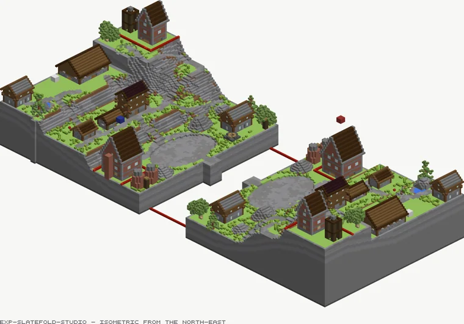
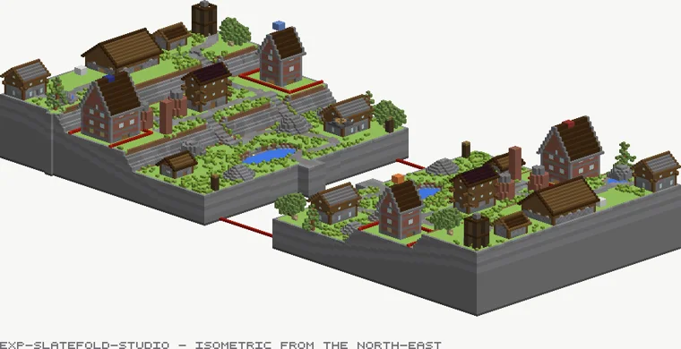
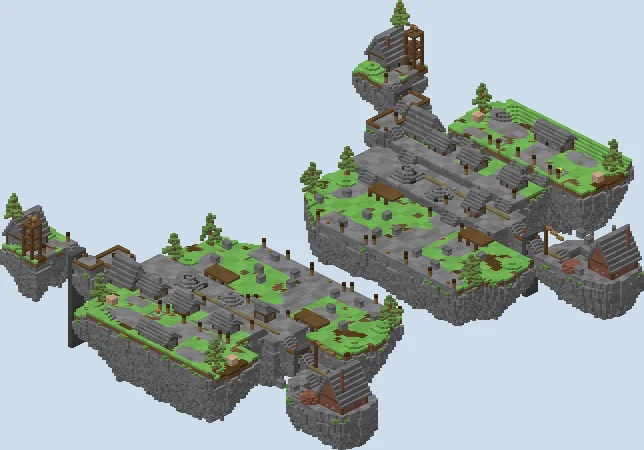
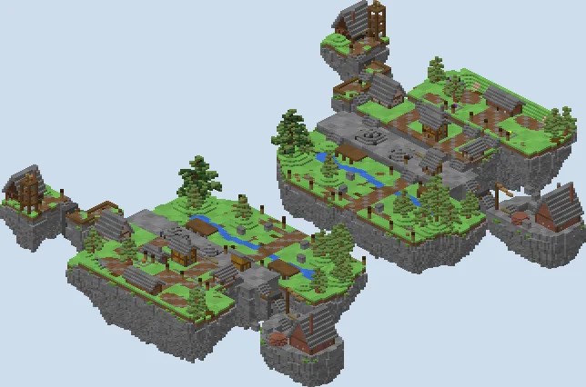
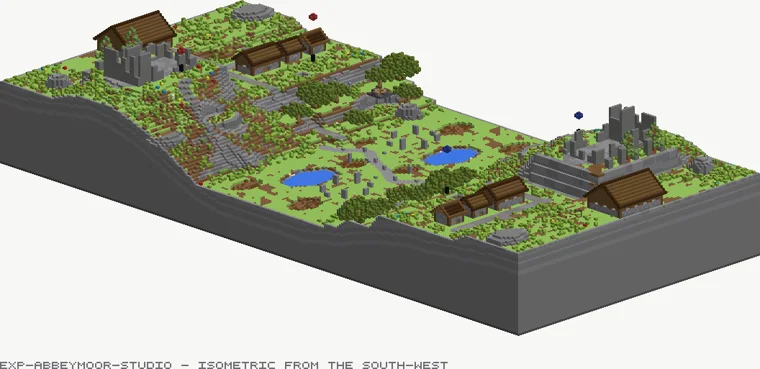
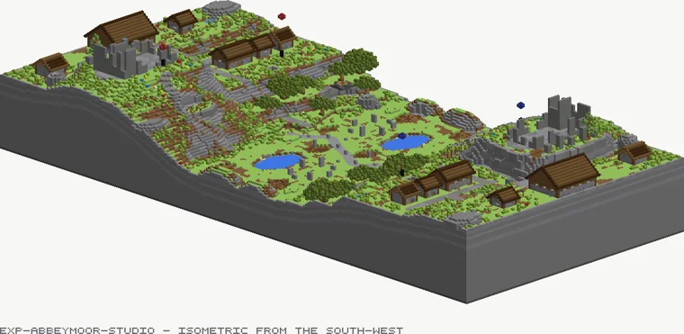
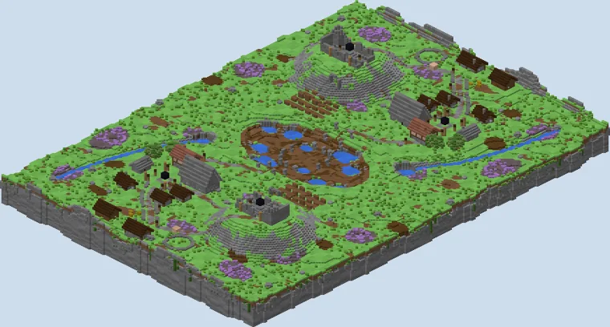
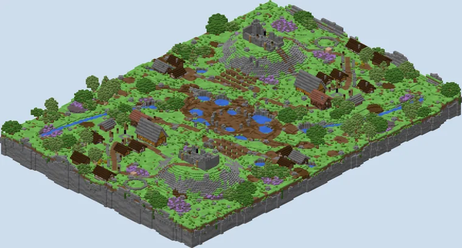
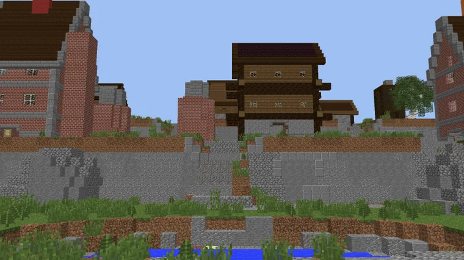
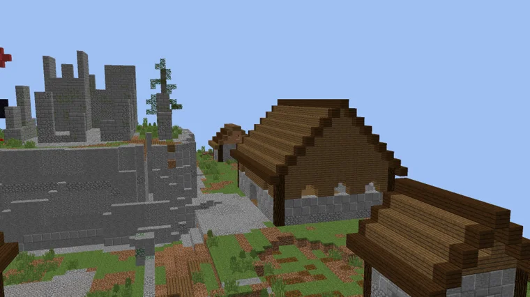
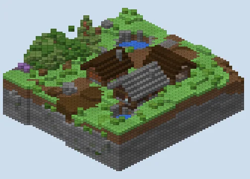
Your review moved both tools, and it moved pgmvox further. Every point was answered on both sides. The studio builder's changes were mostly arrangement (where the rooms stand, what the spawn belongs to, the shape of the ground), and its friction was a missing unit for a place: a grange is eight kinds of thing placed one by one under eight rules. The pgmvox builder's changes added things, a creek, hills, a hamlet, copses, a warped bog, because adding a thing is a few lines of code. That is the first round's finding seen again under review: one round of your eye closes much of the gap on both tools, and the open substrate is what lets that eye ask for anything.
One plan, two builders: Brittlebush III
Brittlebush III was drawn in the studio's planner (untitled-plan-8 on pgmstudio.de, stage plan), and pgmvox's studioplan reads that plan document as a Brittlebush blueprint. It is the one case where both tools start from the identical input. The studio side below is the studio's own PlanCompiler and WorldBuilder run on the plan with no theme, room style or dressing, so it is the floor of what the studio would make rather than an authored board.
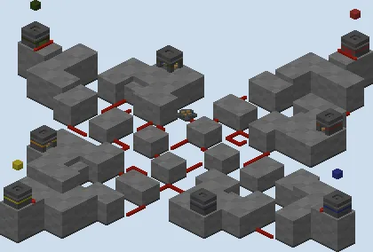
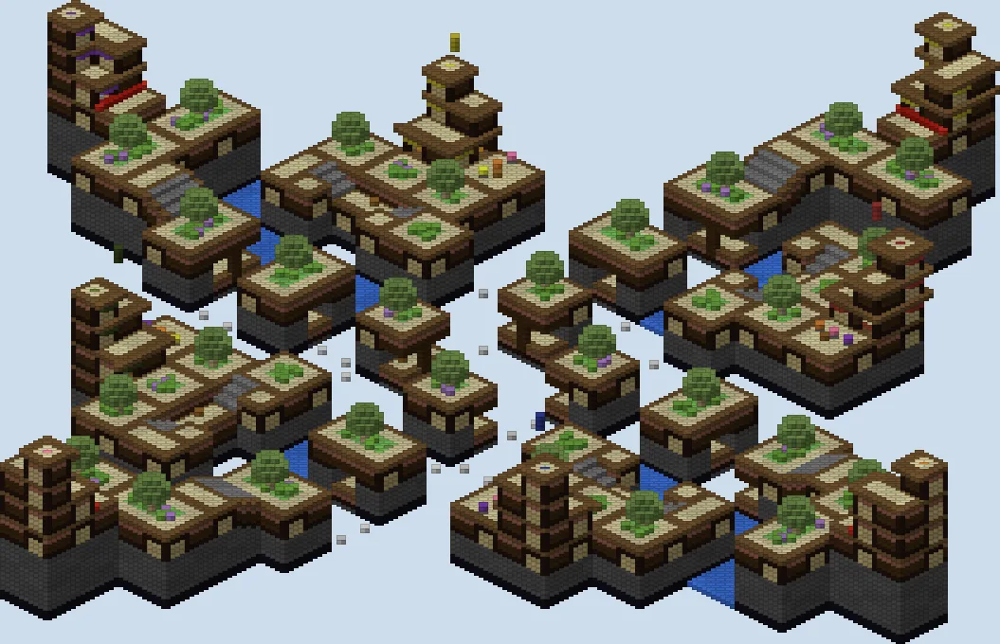
The pair is the whole report in one picture. The studio's floor already carries the gameplay furniture (outlines, markers, wool rooms, 48 stamped tile entities); pgmvox carries the look and the play of the original map, and gives meaning to names the studio ignores (a piece called stair… or double…, a zone called water…). Neither is the finished map. The finished map is both.
How a pgmvox map is made
The order is fixed in pgmvox/run.py, and the agent guide says where a board goes right or wrong: “every expensive failure here was a plan failure.”
The plan states five things
An identity sentence; the arrangement; the numbers, each with a target (“lanes 12 to 16 wide”, “the walk from a goal to the enemy spawn three to four times the walk to its own”); the places, each with what it is, why a player goes there and how they get there; and the look, decided now (biome, three tone families, which material plays which role). The plan is a Raster holding every column's floor height and kind, with the symmetry applied inside the plan so the checker measures both halves, and with storey(n) rasters for caves, roofs and decks. The generator, the sketch, map.xml and the read-back all import the same plan.py, so they cannot disagree.
The sketch is reviewed before anything is built
One sheet: the board from above with floor heights written on every piece, places named, team markers mirrored; the routes arrowed with their jumps; true-scale sections across every height change and unrolled along the routes that matter; and the check table, every measurement against its target with misses in red. “A red row is resolved or explained before the build.”
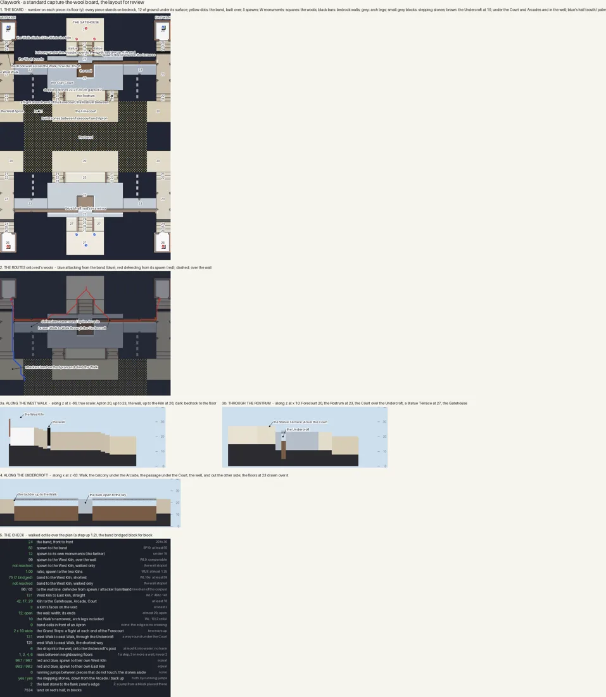
The build adds only the look
“The generator reads the plan; it decides nothing the plan states.” Terrain, landforms, routes, buildings, facades and solids are free to use or to write fresh, because a board that wants a shape the library lacks writes it locally, and the second board to need it moves it into the library with a test. The read-back then walks the built blocks from each spawn (doors, ladders, swimming, jumps), asks every objective to check itself, looks for footing that would fall and water standing against air, and draws the plan's names over the built world.
Why this beats a zone plan
The studio's plan is rectangles on a 5-block grid, fanned through the symmetry, with no stack, no paint and no dressing; its walk is eight-connected places with a scramble and a free drop, and no ladders, jumps or pads. The freeform plan is per block and per storey, carries a capture-aware walk that prices bridging, and prints arrivals per team, jump gaps and sight lines. A plan that can state a cave can be reviewed for its cave.
The terrain, walked backwards
The library's terrain example, the Vale, is fifteen operations on one heightfield. Replayed one at a time, each step's output kept, it shows how pgmvox thinks about ground: start from noise, then apply named landforms in an order the board chooses. Each landform only cuts or only lifts, so they compose without one undoing another. The Recipe Inspector lets you step through these with what each one changed highlighted, cut sections anywhere, and play with the noise.
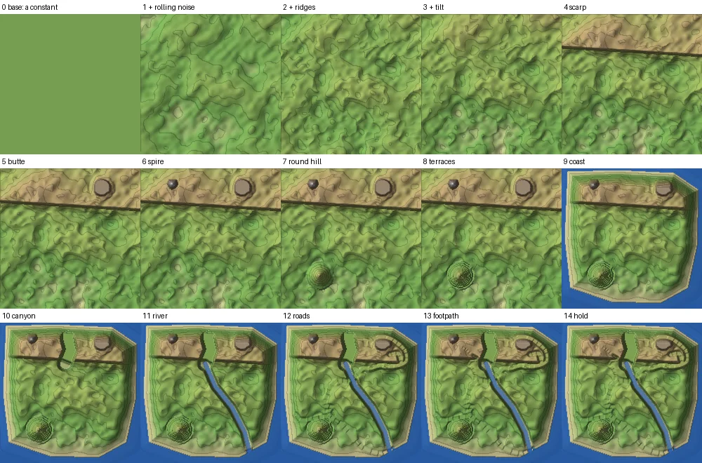
field.noise: a constant, rolling fbm noise (cell 48, ±14), ridges (cell 24, +6) and a tilt toward the sea. Then a scarp, a butte, a spire, a round hill and its terraces, the coast, a canyon through the scarp, a river in reaches and falls, roads found to a grade, a switchback footpath, and hold, which raises every bank to its water.The noise is the least of it
noise.fbm(cell, octaves, gain) is a random lattice every cell blocks, smoothly interpolated, plus the same at half the cell and half the strength, octave by octave. ridged is one minus its absolute value, which puts crests where the noise crosses zero. That is the whole of the randomness, and it only makes the canvas. Everything a player reads as a place comes after it, from operations that each know what they are making:
watercoursesamples the ground along a path and takes the running minimum, so the bed never climbs. It holds the water level in reaches and steps down in falls only where the ground drops two or more and a reach has run twelve blocks, then raises every bank cell to the water so no water stands against air.canyoncuts a floor of a fraction of the width, with walls rising as distance to a power (3 is near-cliff), cut in ledges, with a floor that may never climb along the path.butteandspireare one family: a cliffed stack with a talus apron, blunt or jagged bytaperandjag.route.findsearches 48 headings over the ground with costs for grade, turning, climbing and bridging. The turn cost is what makes a path switch back: without it, 71 zig-zags; with it, 5 legs.
Then the paint reads the angle
terrain.lay reads every column's slope with the studio's own gradient (a test holds them equal on 21,972 cells). It chooses the top block by angle (grass to 30°, coarse dirt to 42°, andesite to 55°, stone past it), puts soil three deep on gentle ground and none on a cliff, and fills the rock with Strata: weighted beds of stone, andesite, clay and terracotta that dip and fold under a noise offset. A cliff is rock to its face, and its beds show.
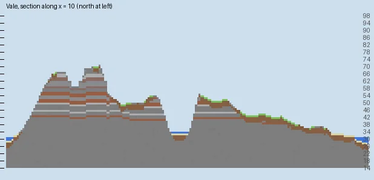
Marks against landforms
The studio's relief works the other way round. A mark is a constraint (this disc is at 40; this line runs from 40 down to 30), and a relaxation solves the smoothest surface that honours every mark at once. Its extremes can only sit where a mark put one, so nothing appears that nobody asked for. That is a real virtue, and it is also why marks feel hard to control: what one mark does depends on the reach, the rim and every other mark, and it shows only after the whole field is solved. Below is the studio's own ReliefSolver, called directly.
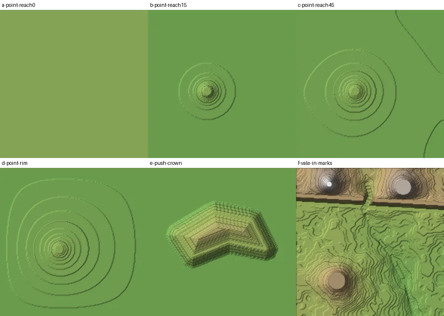
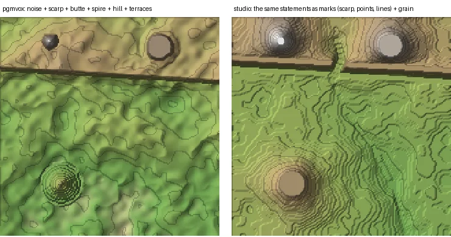
The two are not rivals. The studio's pushes are already operations applied after the solve, so pgmvox's landforms are more operations of that kind. A board can start with marks where the author wants exact heights, then add a canyon, a river that knows it is water, and beds that show on the cliffs. The solver stays; the vocabulary after it grows.
Why the noise rolls
You asked why the studio's noise feels grainy the moment it is turned up, while pgmvox's sections roll and leave flat ground for houses and paths. Both are the same kind of noise: random values on a lattice, interpolated between, summed in octaves that halve in size and strength each time. pgmvox interpolates with a cubic spline; the studio's PatternNoise blends neighbours with a smoothstep. To find what actually differs, I ported the studio's noise exactly and ran each with the other's settings.
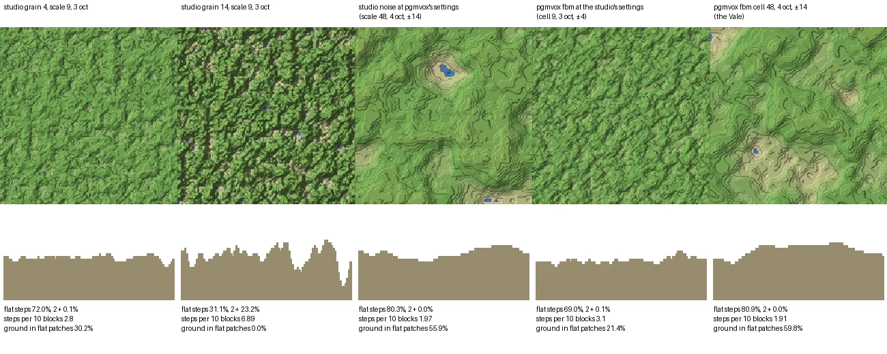
The settings, not the algorithm, make the grain. The studio's noise at pgmvox's settings (panel 3) is as walkable as pgmvox's own (80% flat steps against 81%, 56% of the ground in large flat patches against 60%). pgmvox's noise at the studio's grain settings (panel 4) is as grainy as the studio's. Two numbers decide it:
- The finest octave. The relief grain's default scale is 9 with three octaves, and integer halving makes the cells 9, 4 and 2 blocks. The last octave changes every two blocks, which is the size of a block step, so after rounding it scatters one-block steps everywhere. The Vale's finest octave is 6 blocks across at a fifteenth of the weight.
- Amplitude over feature size. A slope is roughly π × amplitude ÷ feature size. The Vale is ±14 over 48 (a ratio of 0.29). Grain 4 at scale 9 is 0.44; grain 14 at scale 9 is 1.56, and then 23% of all neighbouring steps are two blocks or more: a wall every few blocks. Keeping the ratio under about 0.3, and the finest octave above about five blocks, is what keeps ground walkable.
The interpolation does matter a little. A smoothstep has zero slope at every lattice point, so at large scales the contours run straight along the grid; the studio panel at scale 48 shows square-cornered terraces where the pgmvox panel is round. A cubic spline, or gradient noise such as Perlin or simplex, removes it.
And noise is not where the flat places come from. pgmvox uses noise only as the canvas. The flat ground a house stands on comes from operations that flatten: a terrace step, a butte's top, a road graded into the hill, hold at a bank, and a house's own site eased into the slope. A recipe is a chain of such operations over noise. Game terrain is usually built this way: Minecraft's own world generation, since 1.18, is a graph of noise fields and operators written as JSON ("density functions"), and tools such as World Machine and Gaea are node editors over the same idea. The Hytale editor you mentioned is the same family. A linear recipe is the simplest such graph, and nodes can come later if a board ever needs one operation's output in two places.
Strata that follow the land
Here the studio is ahead. Its height band stack can follow the ground (TP26): the bands' datum rises by a share of the surface averaged over reach cells either side, so the beds carry the land's broad tilt while a hill cuts through them. pgmvox has two settings and neither is that. Its beds are level with a dip and a fold, which ignores the land; or their offset is the surface itself, which wraps every bump in a thin rind.
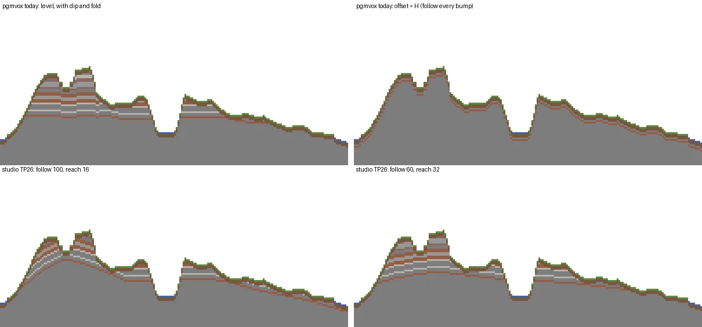
Bringing it over is one line in pgmvox: the bed offset becomes follow × (the ground averaged over ±reach), which is exactly the studio's definition. It is a good example of the merge running both ways.
One renderer
You're right that seeing the board is not new. The studio has drawn whole-board isometrics and x-rays, top-downs, axis sections, transects and walks for a long time, and its eye view is the best render either side has: Mojang's own textures, a camera that can look at any named thing, and a text twin saying what it saw. That is how your feedback on the studio boards was given. The difference is narrower, and it is framing:
| Render | Studio | pgmvox |
|---|---|---|
| Isometric | the whole board from a corner; a house is a few pixels | any box at any scale, so one picture per place at 4–5 px a block |
| Section | along an axis (picture), or through points (text) | along any polyline, unrolled at true scale, as a picture |
| Elevation | none | a box seen straight on from one side: a facade, a cliff face |
| X-ray | whole board, with a text list of every roofed void | whole board or a box |
| Eye | real textures, aimed by name, one at a time | none |
| Plan over the built world | the sketch and the plan as numbers and ASCII | the plan's names, routes and markers drawn on the built top-down |
If there can be only one, make it the framed isometric, with the real textures when it is close. It shows a place's bulk, roofs, footing, materials and neighbours in one picture, an x-ray mode covers the underground, and framing it is free because the plan already names every place and its extent. The eye view stays as the finish check it is good at. What can go: the whole-board isometric (a framed view of the whole board is the same call) and the axis-only section (a polyline section covers it).
The grammar, step by step
A grammar board is a list of sections: boxes at one height. The grammar reads every column's depth in from its section's edge, then visits each section once, in a fixed order: body under every column; a face where the ground beside falls two or more, its courses read down from the rim; an accent bay every so many along a face, laid whole or not at all; a seam where two sections meet at one height; a fill over the interior, chosen by the section's shape; motifs on top. The blocks all live in a Style, so the same plan can be built in Brittlebush or in Claywork. Below, each picture adds one rule to the one before it.
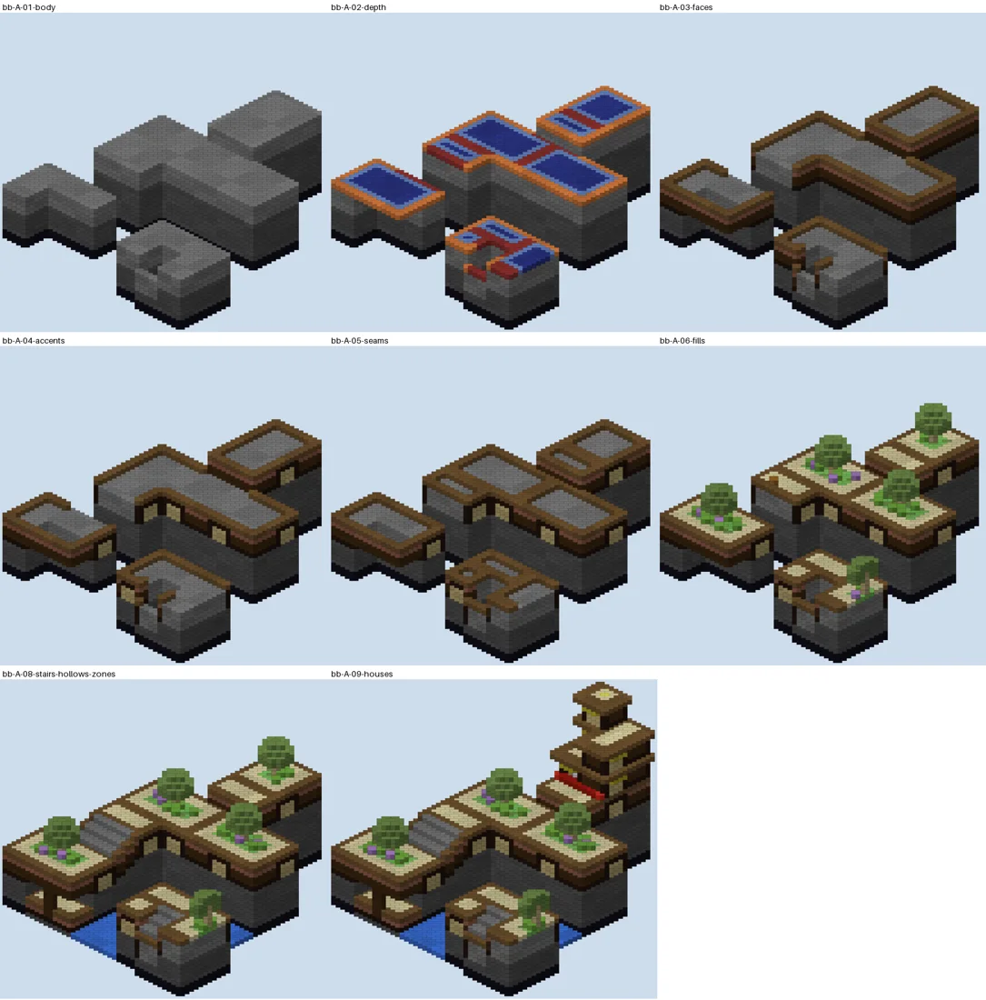
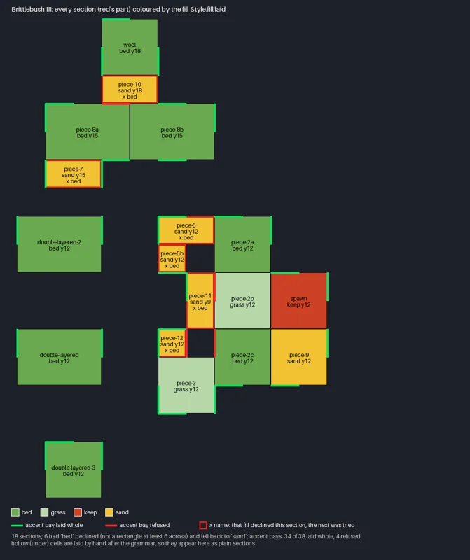
bed (under six across) and became sand; 4 of 38 accent bays were refused for want of air.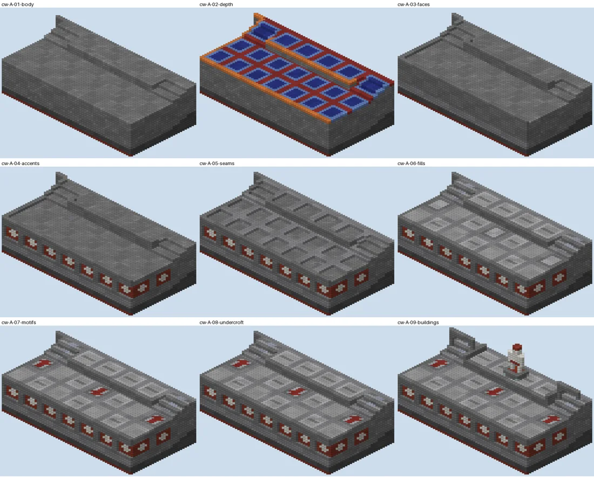
This is the plan road you found with Brittlebush III. The studio's planner already draws everything the grammar reads (pieces, heights, roles, zones); a brittle cell is five blocks, which is the studio's grid. What it cannot say yet is held in board tables: which cells are hollow, which deck is raised, where a rectangle splits into two sections, which fill a section must take, where the arrows go. Those are a handful of fields on a piece, and with them a bound style turns a drawn plan into a finished board in one step.
Why the houses look good
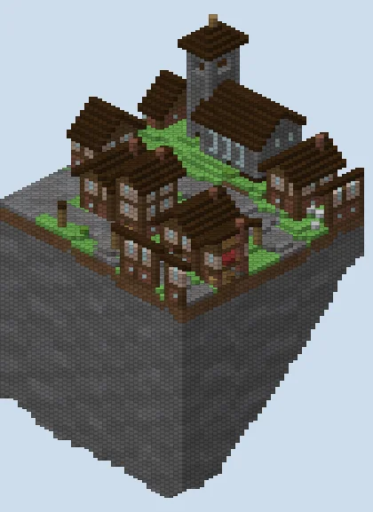
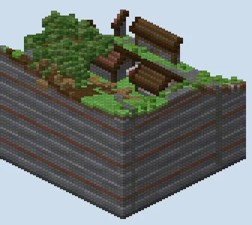
The difference is where the taste lives. A studio house style is 77 to 258 values (a median of 146): every band of every storey's wall, the posts, beams, gable windows, doorway head, plate and surface are data, and any combination of them is legal. An agent filling those in has to rediscover good proportions every time, and the bad combinations look bad. A pgmvox style is ten material slots: ground wall, upper wall, frame wood, gable, floor, roof, stair, slab, door, window. The articulation is code and always runs: a post at every corner and every four blocks along an upper storey, a laid log at each storey's head turned along its wall, jettied joists, the gable filled to the roof's underside, the attic cleared, a chimney from the floor to two above the crown with a cap. Any choice of materials gets a well-built house.
Three other things help. The studio's doorway is a closed set (air, cobweb, glass) because one rule serves wool rooms and houses alike, so a house can never have a real door; pgmvox's houses do. Frame puts a house at any heading with the studio's own six roof forms. And there is no footing: pgmvox fills every column under the plate down to the ground and eases the ground round the footprint over two blocks, so a house sits on a slope as if it were built there. The studio's footing was a one-block ring around the plate, now off by default and complained of (HS7).
The cost is in the other direction. pgmvox houses are one rectangle a storey, with no wings or porches, and they have no window/door rule (49% of sampled houses have a pane beside the door). The studio has both. The meeting point is an archetype as a library row: the framing rules of a kind of house, with the studio's styles mapped onto archetypes as their materials.
Feature by feature
Marks read: ● does it, ◐ partly, ○ cannot.
| Capability | Studio | pgmvox |
|---|---|---|
| Planning and review | ||
| Plan unit | ◐ rectangles on a 5-block cell grid, roles piece/spawn/wool-room/buffer, zones, placements | ● per-block raster, polygons, storeys, Course for boards played in order |
| Plan checks | ● 58 calibrated layout rules (GO, SP, WL, LN, CT…), refusals with proposed edits | ◐ numbers with targets, measured by hand per board (about 120 lines), octile walk, jumps, sight, arrivals |
| Review surface | ● web UI, review notes with pictures, history, diff, restore | ◐ one annotated sketch sheet per revision, reviewed in chat |
| Terrain and water | ||
| Relief | ◐ marks (point, line with tread and batter, area, rim, scarp) solved by relaxation; no noise heightfield | ● numpy heightfield ops: noise, ridged, watercourse, canyon, butte, scarp, spire, terraces, coast, grade |
| Floating islands | ◐ a flat underside per shape, or stacked layers | ● per-column undersides: cones, flutes, spires; karst skirts; root vines |
| Underground | ◐ a roofed void by subtract plus a lid, or a second layer; no tunnels (TS140) | ● tunnels with level floors, chambers, timbered galleries, shafts, cave dressing; storeys walked |
| Ground paint | ● 14 material kinds, band stacks on depth, inward, height and slope; biome fields | ◐ soil by slope (the studio's own gradient), rock beds that dip and fold; patches written per board |
| Water | ◐ channel, pool and basin props, water lanes; does not read the relief | ● rivers with a level per reach, weirs and falls, falls into the void, lakes, a loose-water audit |
| Structures | ||
| Houses | ● 57 styles, six roofs, wings, porches, ladders, stilts, window/door rule; axis-aligned only | ◐ any heading with the studio's six roofs (tested cell for cell), jetties; one rectangle a storey; no window/door rule |
| Facades | ◐ wall materials as paint | ● insets, glyph words, flutes, panels, slits, coffers; floor fields |
| Style | ◐ theme buckets: rim, wall, surface, fill, bedrock | ● a grammar over sections and faces (Brittlebush, Claywork), one plan spoken in several styles |
| Props | ◐ seven kinds: stroke, fluid, flora, house, tree, boulder, chest | ● anything; in the library stalls, lamps, chests drawn as letters; per board mills, bridges, ships, headframes, carts |
| Roads | ◐ a relief line plus a stroke, dragged by hand | ● routes found over the ground to a grade, switchbacks, shared trunks, paving, bridges |
| Objectives and stamps | ||
| Modes | ◐ CTW, DTM, DTC, control points | ● those plus flags, payload, attack/defend stages, score boxes, FFA, water drop, wool run, knockback, hide and seek |
| Goal markers | ● a wool cube or asterisk over every goal, above the build ceiling | ○ none; a glass cap on a wool monument; board-local beacons |
| Build-zone outline | ● redstone two blocks out on every void-facing edge (ST5) | ◐ copied by hand on 2 boards; cobwebs in the Brittlebush grammar |
| Defence wall and chests | ● bedrock wall, chests in the approach face, chests at every goal | ◐ props.DEFENCE, defence_chests (0.19); used by Claywork and Lantern Karst |
| Wool room | ● shell, standard loot in four corners, entrance line, glass doors | ◐ wool_chests (0.18), used by no board yet |
| Kit | ● standard kit, pickaxe paired to the goal material | ◐ written per board |
| map.xml | ● codec, parser, validator, standards (modes, rewards, itemkeep) | ◐ a 201-line builder; checked through the studio's parser where the studio reads the mode |
| Reading the world | ||
| Walk | ◐ eight-connected, scramble, free drop 3, priced bridging; no ladders, jumps or pads | ● voxel walk with doors, ladders, swimming, jumps, standing in build zones, kill height |
| Physics and sight | ○ none | ● 1.8 tick model: falls, damage, knockback, pad launch; sight lines |
| Renders | ● eye views with the real textures aimed at any named thing, with a text twin; whole-board isometric and x-ray; axis sections; transects; stored maps only | ● isometric cropped to any box, so one picture per place; elevations; cutaways along any line; x-ray; the plan's names over the built world; flat colours, offline, in seconds |
| Running it | ||
| Who can use it | ● a deployed multi-user web app with sign-in, a database and history | ○ files in git, one agent at a time |
| Regression net | ● about 4,100 tests, e2e, corpus goldens over 350 maps | ◐ 90 tests and a snapshot gate over the examples |
Your observations, checked
Windows against the door
Confirmed, and it is half of all houses. pgmvox's window rule, build.windows() (build.py:345), looks only at how far along the wall a block is; the door is chosen and written after the walls (build.py:442–450) and nothing clears its neighbours. Over 960 sampled houses, 49% had a pane or bar beside the door. Riftwater's own house.py has the same gap (windows at lines 171–184, the door at 195–196). The studio already has the rule: HouseWindows drops “any seat that would meet a doorway, or the block of wall either side of it”. The fix is to choose the door first and pass its run into the window test.
Fixed since: pgmvox 0.20.0 on the freeform branch keeps a block of wall either side of every door (c7f16729), and the rebuilt Riftwater has 0 doors with a pane beside them. The count below is the board as it was.
On Riftwater as first built, 36 of the 58 doors (62%) had a glass pane directly beside them in the same wall, 18 on each side. The door's facing was read from its data, and the check counts a pane on either side of the doorway, along the wall, at either of its two heights. Red's 18 are below; blue's are their mirror images at x' = −1 − x.
The 18 doors on red's side, with a pane beside them
| x | y | z | door faces |
|---|---|---|---|
| −94 | 60 | −7 | east |
| −92 | 54 | 41 | east |
| −92 | 54 | 52 | east |
| −91 | 55 | 64 | east |
| −86 | 57 | 71 | north |
| −80 | 52 | 52 | west |
| −67 | 53 | −56 | south |
| −65 | 55 | −72 | south |
| −63 | 52 | 1 | north |
| −56 | 53 | −34 | west |
| −51 | 53 | −48 | south |
| −44 | 56 | −71 | south |
| −43 | 52 | −23 | east |
| −34 | 51 | −40 | north |
| −33 | 51 | −48 | south |
| −31 | 53 | −70 | south |
| −24 | 50 | −40 | north |
| −21 | 51 | −73 | south |
A second defect turned up beside it: at headings of 30°, 45°, 60° and 135°, about half of doors have a wall block directly in front of or behind them, because the facing is rounded to a cardinal and nothing checks the cell outside.
Objectives that are hard to find
Confirmed: pgmvox has no marker and no visibility check. Every sight call in the library measures how much of a spawn a goal or hill can see, never whether an attacker can see the goal. The underground and tower-top goals (Hollow Mesa's Throat, Hollowcrown's Hall of Echoes and Eyrie, Frostholm's lantern, Stratum's tower) were possible because nothing forbade them. The studio forbids them by construction: goals float over the highest ground (OB17, OB31) and every goal gets a floating wool marker 25 blocks over mean ground, out of build reach.
Measured: how much of the attackers' ground can see each goal
Every destroy objective on every board with a world was measured the same way: the share of standable cells the attackers reach, within 60 blocks and on their side or the middle, from which a line from eye height reaches any open face of the objective (v60); and where along the attackers' shortest walk from their spawn it first comes into sight. 65 objectives over 19 board versions; the method and every row are in agent-reports/visibility-audit.md.
| Board | Objective (red's) | x, y, z | Setting | v60 | First seen on the walk | Marker |
|---|---|---|---|---|---|---|
| Hollowcrown | Echoes | −66, 23–24, 16 | underground | 2% | 16 blocks off, move 181 of 194 | no |
| Hollowcrown | Eyrie | −54, 106–107, −70 | crag top | 2% | never on the path | no |
| Hollow Mesa, before | core | −73…−70, 49–52, −26…−23 | underground | 4% | 19 blocks off, move 157 of 173 | no |
| Hollow Mesa, after the move | core | −67…−64, 79–82, −26…−23 | open, 5 up | 42% | 129 off, from move 39 | no |
| Frostholm, before | core | −18…−16, 75–77, −68…−66 | lantern roof | 9% | 85 off, move 75 | no |
| Frostholm, after the move | core | −29…−27, 57–59, −59…−57 | open, 8 up | 30% | 40 off, move 125 of 161 | no |
| Stratum | obelisk | −55, 100–101, −50 | niche in the shaft | 17% | 125 off, move 29 | no |
| Tamarisk Wash | sunstone | −63, 65–66, 21 | open, 2 up | 20% | 15 off, move 143 of 154 | no |
| Riftwater | market square | −66, 54–55, −44 | open, among houses | 21% | 45 off, move 123 of 165 | no |
| Abbeymoor, pgmvox | village | 30, 70–72, −70 | open, 3 up | 22% | 16 off, move 166 of 182 | no |
| Cinder Reach | core | −53…−49, 52–56, 22…26 | open, 8 up | 27% | 121 off, from move 14 | no |
| Abbeymoor, pgmvox | abbey | −40, 88–90, −72 | open, 4 up | 38% | 128 off, move 61 | no |
| Russetford studio | monument | 4, 36–38, −56 | open, 3 up | 55% | 128 off, from move 7 | yes |
| Cinderfall | core | −50…−46, 65–69, −12…−8 | open, 6 up | 56% | 107 off, from move 15 | no |
| Redwash Mesa | table | −56, 64–65, −24 | open, 1 up | 58% | 112 off, from move 32 | no |
| Abbeymoor studio | village / abbey | 30, 38–40, −62 · −24, 49–51, −69 | open, 2–3 up | 59% / 64% | 127–128 off, from move 50–56 | yes |
| Riftwater | winding green | −66, 52–53, 48 | open | 59% | 128 off, from move 44 | no |
| Gullhaven DTM | harbour / beach | 30…32, 22–24, 24…26 · −52…−50, 25–27, 7…9 | open, 3 up | 68% / 78% | 27 and 96 off | no |
The other session's two moves worked. Lifting Hollow Mesa's cores out of the Throat onto the plateau took them from 4% to 42%, and Frostholm's from the lantern to the ground from 9% to 30%. Hollowcrown is the outlier you called it: all four of its goals are seen from 2%. Over the final versions the studio's objectives have a median of 55% against 31% for the freeform ones. Every freeform goal that matches the studio stands on open ground one to six blocks up (Cinderfall, Redwash, Riftwater's green, Gullhaven, Tamarisk's obelisks).
Placement and markers do different jobs, and a goal wants both. A marker says where to go from across the map; it does not open a line of sight. The studio's Slatefold wool rooms carry a cube 25 blocks over each one and are still seen from 4% and 18% of the ground near them, because the wool is inside a room by design. A destroy goal wants the opposite: placement that keeps it in view on the last stretch of the walk, and a marker for the first. Two gates would hold both: a goal seen from at least a quarter of the attackers' ground within 60 blocks, and in sight for the last 40 blocks of their walk. Both thresholds are proposals and should be calibrated against the corpus before they become rules.
Build zones without markings
Confirmed for most CTW boards. The build zone is written into the world as block 36 under every buildable column, which is precise, but only the two Lantern Karst boards reproduce the studio's redstone outline (518 and 522 blocks). Brittlebush III and Sandreach have a cobweb at the middle of each void-facing gap edge. Brassmoor, Claywork and Hoarfrost Reach have no visible edge at all.
| CTW board | Block 36 under zones | Visible edge | Defence wall | Wool-room loot |
|---|---|---|---|---|
| Lantern Karst (and port) | yes | redstone, the studio's ST5 | bedrock + cobweb; chests faced the wrong way until 10 Oct | iron pieces; studio loot from 0.19 |
| Claywork | yes | none | bedrock to the floor of the world, DEFENCE chests | ROOM_GEAR |
| Brassmoor Works | yes | none | three bedrock and a web | one chest, chestplate and arrows |
| Hoarfrost Reach | yes | none | none | apples, beef, arrows |
| Brittlebush III, Sandreach | yes | a cobweb mid-edge | none | none |
The stamps you traded away
The bedrock wall with its defence chests, the defence chest at every goal, the wool room's gear, the floating markers and the outline are all one subsystem in the studio (StructureStamper, DefenseChest, GoalMarkerStamper, BuildMarkerStamper, the wool-room stamp), and none of it runs on a freeform world. pgmvox has been copying them one at a time (wool_chests on 10 Oct at 00:30, defence_chests at 00:46). Copying is the slow road: these are deterministic stamps over objectives the freeform plan already states as objects, so they could run over a pgmvox world unchanged.
Build-region fidelity
Two different things got looser. The zone itself is exact (a per-column mask equal to the plan's), but it is written only as block 36 plus a void filter and maxbuildheight, so nothing outside the board's own read-back checks that the mask matches the plan. And the studio's richer build intent (rectangle unions with holes, over-void areas, the outline, the EZ checks) has no counterpart.
Angled houses and the tower wool
Houses at any angle come from build.Frame: every block asks where its centre falls in the building's own axes, walls are closed against eight neighbours so a 45° wall has no gaps, and the roof is the studio's RoofField ported and tested cell for cell against 300 studio roofs, laid in cubes and slabs where stairs cannot face the slope. Hollowcrown uses sixteen headings on one half. Hoarfrost Reach's lighthouse is board-local: a striped 9×9 shaft, slits, a ladder with a hatch every five courses and the wool room at y 94 under a glass lantern.
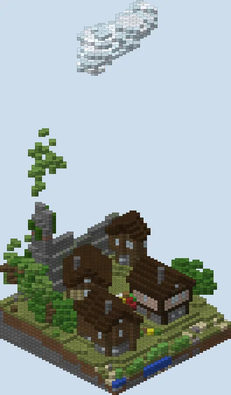
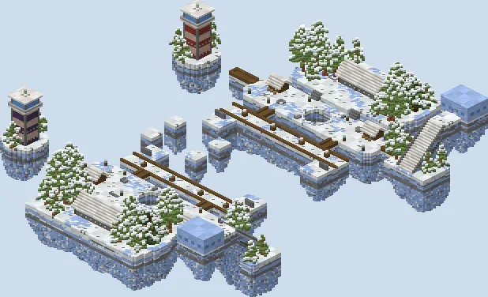
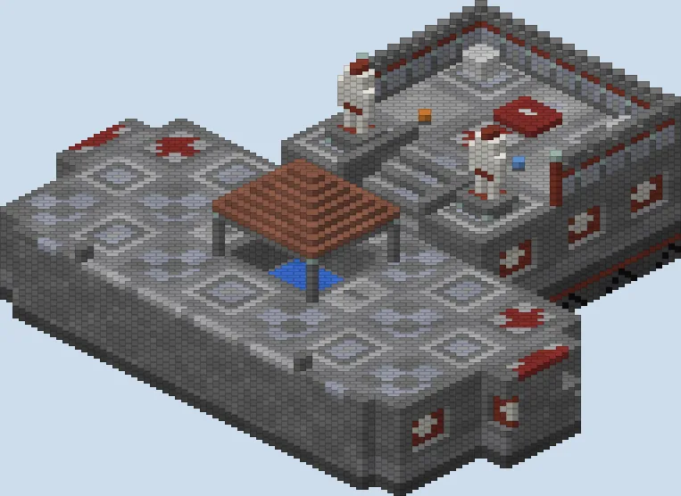
The playtest notes, sorted
Your notes of 10 October name 30 faults across 20 boards. Sorted by kind, they divide cleanly into what the studio already prevents and what is new.
Faults by kind, and whether the studio would have caught them
Mode correctness and discoverability are the studio's home ground. The obsidian monument with no diamond pickaxe (Redwash) is DestroyKitPairing; the hills with nothing to change colour (Tidewell) are OB29; the wall's chests facing away and the thin wool loot (Lantern Karst) are the defence-wall and wool-room stamps; the hidden cores and tower-top monuments are prevented by construction and by the markers.
The new faults come with the new freedom. Stairs attached on one side only, ladders standing in water, a well that misses its tunnel, two stairways colliding, a turned-stair ramp that breaks, props on a run that make you stutter: the studio cannot make any of these because it cannot place a free stair, ladder or shaft. The same goes for vegetation: the studio's trees are clicked one at a time, while pgmvox scatters forests, and five boards came out too dense to fight in. Studio 2.0 needs gates for this vocabulary, not only the vocabulary.
All 30 items
| Board | Fault | Kind | Studio |
|---|
Your praise lands on the same axis. Riftwater (“essentially perfect”), the Gullhavens, Curio Square, Stratum and Penstock are the boards where the freedom was spent on places and the play was kept simple.
Every board
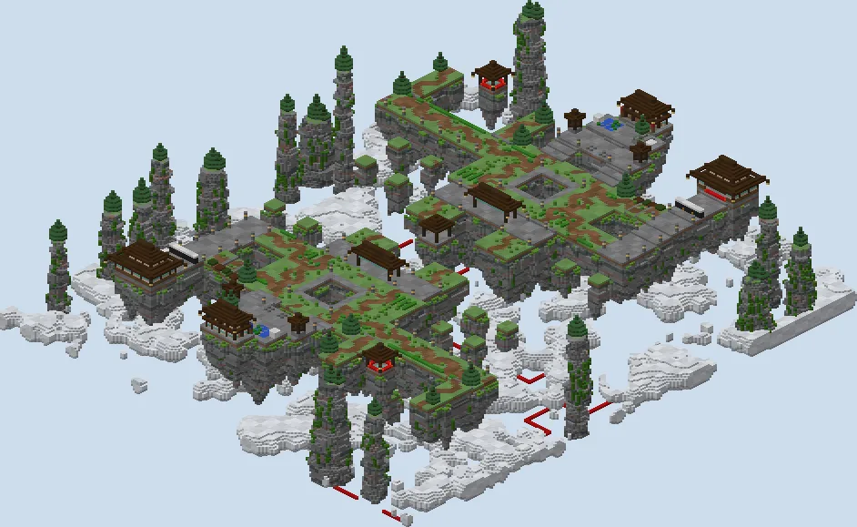
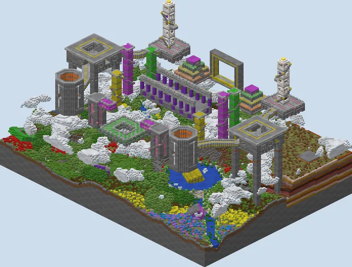
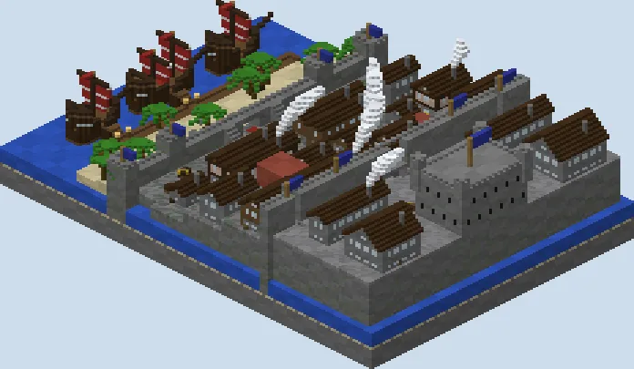
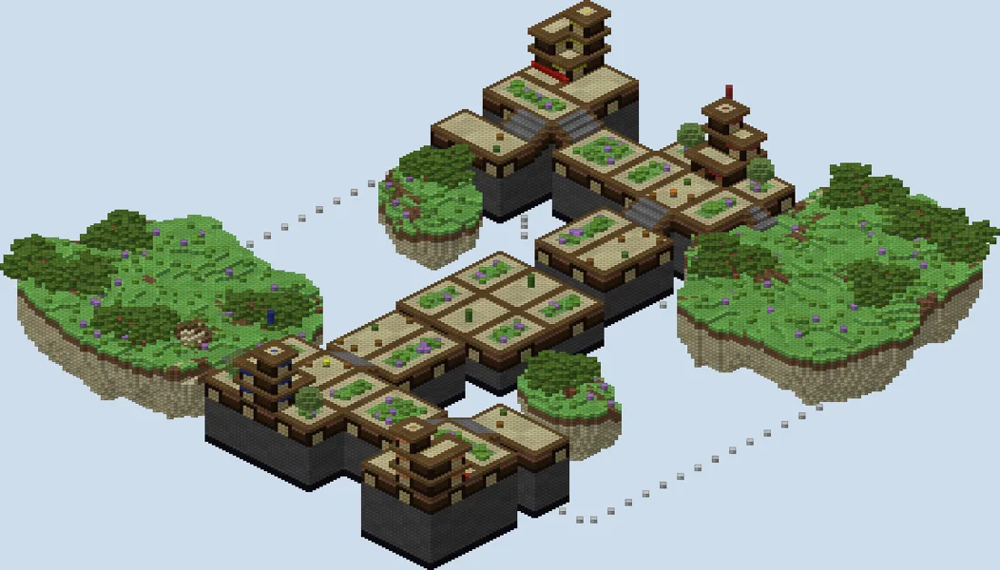
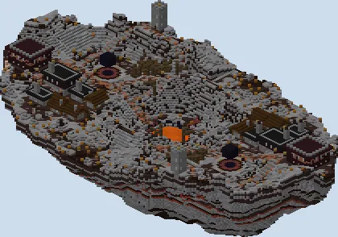
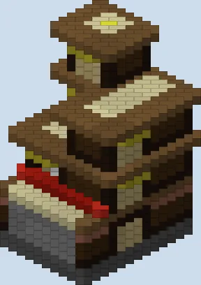
The census: 37 boards
| Board | Mode | Built on | Board lines | Signature |
|---|---|---|---|---|
| Riftwater | DTM ×2 | bespoke | 3,379 | rift with twin falls, cave behind the water, mine, market town, mill wheel |
| Hollow Mesa | DTC | bespoke | 3,242 | banded mesas, natural arch, tram trestle, core in a cavern |
| Frostholm | DTM+DTC | bespoke | 2,499 | winter coast, half-frozen straits, lighthouse core |
| Cloudhaven | DTM | bespoke | 2,046 | eleven islands a side at many heights, balloons, airships |
| Hollowcrown | DTM ×2 | bespoke | 3,126 | houses at any angle, the Wend, a cavern city with a lake |
| Stratum | DTM+DTC | bespoke | 2,418 | inset, glyph, flute and coffer faces; glass cloud sea |
| Lantern Karst | CTW | bespoke | 2,853 | 26 floating karst pieces, block-36 zones with the ST5 outline |
| Penstock | TDM + score boxes | bespoke | 1,530 | a station carved from one block, galleries and shafts |
| Calcite | KOTH | bespoke | 4,073 | terraced quarry, glass tunnels under lava, pads tuned in 1.8 physics |
| Riad | King of the Flag | bespoke | 3,240 | water garden, caged water columns, banner flag |
| Gullhaven, Gullhaven DTM | FFA rage, DTM | bespoke | 2,961 / 341 | a fishing island, then the island twice |
| Saltgate | attack/defend | bespoke | 2,866 | a harbour citadel in three stages |
| Copperline | payload | bespoke | 2,832 | a mining railway traced as PGM traces it |
| Lantern Pass | runners and shooters | bespoke | 2,232 | a festival road between two walkways, sight read per cell |
| Sunwell, Lantern Drop | water drop | bespoke | 2,286 / 1,707 | a fall model for every drop; Sunwell set aside |
| Loomfall | wool run | bespoke | 1,329 | five flying carpets over a desert city |
| Spark | knockback | bespoke | 1,715 | the Claude spark in terracotta over a cloud sea |
| Curio Square | hide and seek | bespoke | 1,645 | 48 plots by Opus, Sonnet and Haiku |
| Riftwater port, Lantern Karst port | DTM, CTW | pgmvox | 1,885 / 1,381 | the same boards on the library |
| Cinder Reach, Redwash Mesa, Brassmoor Works, Vinewatch Ruins, Tidewell Canals | DTC, DTM, CTW, TDM, KOTH | pgmvox (Opus trials) | 688–1,058 | 9–29 minutes each |
| Cinderfall, Tamarisk Wash, Hoarfrost Reach, Overgrowth, Whitecliff Cistern | DTC, DTM, CTW, TDM, KOTH | pgmvox (Sonnet trials) | 1,133–1,593 | the same five modes by Sonnet |
| Claywork | CTW | pgmvox grammar | 1,229 | four layout reviews, defence chests, the Undercroft |
| Brittle study, Brittlebush KotH, Brittlebush III, Sandreach | study, KOTH ×4, CTW ×4, CTW | pgmvox grammar | 364–824 | Brittlebush's look as rules |
Studio 2.0
The goal is one tool, and the hard part is the one you named: the studio lets a person see what an agent did at every level, change it and diff it, while a pgmvox board is a program whose middle is invisible. Everything that made the boards good (landforms in a chosen order, the grammar, angled frames, props with a reason) lives in exactly that invisible middle. So the question is how to make the middle a document without losing what it can say. The full argument is analysis/freeform-vs-studio/STUDIO-2-DESIGN.md; the Recipe Inspector shows what a person would see.
Four ways to hold a pgmvox board
| A · upload the world | B · store the code | C · a recipe | D · a recipe with made things | |
|---|---|---|---|---|
| A person sees how the ground was made | no | as code | step by step | step by step |
| A person can edit one landform | no | no | yes | yes |
| A diff says what changed | voxels | code | operations | operations |
| Bespoke things (a mill wheel, a ship) | yes | yes | no | yes, as objects |
| Arbitrary code on the shared server | no | yes | no | no |
| Stamps, gates, intent, reads | yes | if wired | yes | yes |
| Cost to build | days | weeks | months | months |
D is the destination and A is the first step. A recipe is an ordered list of operations, each with an id and its parameters, run deterministically over a shared state (the heightfield, named masks like sea and roads, the block volume), with every step's output kept. A made thing is the escape hatch: a block volume the agent generated locally, uploaded with its source for provenance, placed and turned as an object. A made thing the second board needs becomes a library operation, which is the rule pgmvox already lives by.
It works on a real board
A seventy-line interpreter maps each operation name onto one pgmvox call. A second version of the recipe moved the butte and widened the canyon: two steps' parameters changed, and six steps' effect changed, because the roads re-routed over 3,261 columns nobody touched. A diff has to show both layers, and the second is the one to warn about. For scale, Russetford's stored layout is 378 KB and its refinement 357 KB, generated by a 426-line script: a recipe states a landform where a layout states its result.
How the pieces fit
- The studio's relief solver is one operation in the recipe (
field.solve), and pgmvox's landforms come after it, as its pushes do now. - The planner stays the front door. A drawn plan compiles into the recipe's first steps, and with a grammar style bound, its pieces become sections in one step (
grammar.from_plan, which isstudioplantoday). - Upload and configure survives untouched. An imported world is a recipe of one step, a made thing covering the board, and Configure works over it as it does now.
- Styles stay library rows. Grammar styles and house archetypes are data like themes; the rules that make them look right (a bay laid whole or not at all, the framing of a house) stay code.
- The stamps and gates run last, over everything. Markers, outlines, wool rooms, defence walls, kit pairing and the export gate stop depending on how the ground was made.
What the model sends
| Call | What it does |
|---|---|
PUT /map/{slug}/source?dry=true | the plan, the recipe and the intent in one call, as today's headless road; answers per-step summaries and findings, stores nothing on a dry run |
POST /map/{slug}/recipe/steps/{id}/preview | one step with other parameters, stored nowhere: the agent's equivalent of dragging a slider |
PUT /map/{slug}/recipe/steps/{id} | keeps an edit; re-runs from that step |
GET /map/{slug}/recipe/steps/{id}/render · /delta | the state after a step as a picture, and what the step changed as a mask and counts |
GET /map/{slug}/recipe/diff?from=&to= | edited steps with parameter diffs, and steps whose effect changed |
POST /map/{slug}/made | a made thing: a block volume, an anchor, a footprint, the source that generated it |
the existing reads with ?step= | slopes, incline, walk, column, transect after any step, not only on the finished world |
The model's loop is ORDER-OF-WORK's: places on the outline with numbers and targets; terrain steps, read slopes and walk, adjust; carves, read the x-ray; made ground; the intent, then stamps and gates. A person opens the inspector, scrubs the steps, changes a parameter or leaves a note on a step, and the next agent run receives each hand edit as an SR1 naming the step and the parameter, as it does today.
The order of work
- Stamps over a made world, now. Import a pgmvox world with its intent and run
WorldBuilder's stamps and the export gate over it. Fix pgmvox's two house defects. Add the playtest's gates to its read-back: a goal visible from where attackers arrive, stairs attached, no ladder in water, joins that open, a tree-cover ceiling per mode. - The recipe as a stored document, with made things and step reads, holding steps pgmvox computed. The studio shows and diffs a recipe before it can run one.
- The operations ported into the studio, family by family, in the order the boards used them: field and landform, paint and beds, carves (TS140), houses with a heading, the grammar, routes.
- One plan, with polygons, storeys and the grammar's per-piece fields, whose numbers-with-targets become rules.
A second analysis, cross-checked
The freeform branch's own session had a Sonnet agent write freeform/QUALITY-LEAP.md on the same question. It lists the same mechanisms (per-block control, paint by slope and tilted beds, undersides, angled frames with the studio's roofs, the grammar, props, the plan-sketch-walk loop) and ranks the floating objective marker first among what to adopt. Three things it states more sharply than this report: the studio's painter "rewrites the surface, no new geometry, only materials", so every studio look is a finish over a shape already decided; WX12 holds a room inside its plan piece, which is part of why the studio's wool rooms sat where the plan's rectangles were; and a freeform board enforces only the rules its checker remembers to re-measure.
Two of its claims do not hold. It asks for a slope axis in the studio's themes, which exists (TP24), and the studio's strata are ahead (TP26). And it says gameplay "barely changed": the XML is valid, but nine of your thirty playtest faults are ones the studio catches, and the experiment's pgmvox Abbeymoor added a tenth, a 27-block obsidian cube where DC3 allows three. Its "nothing here is controlled" was true when written; the experiment now moves weight off the tool and onto what was spent on it. The full cross-check is analysis/freeform-vs-studio/QUALITY-LEAP-CROSSCHECK.md.
Method and limits
- Sources. Three Sonnet helper reports (pgmvox anatomy and census; studio inventory; same-brief comparison), each checked against the code before use and committed under
analysis/freeform-vs-studio/agent-reports/. I viewed the renders of all 42 board render sets myself. - Not played. Nothing on the new library boards has been opened in PGM. The playtest rounds on older boards found over ten faults the read-back could not see.
- Plan and built walks disagree. pgmvox's plan walk is octile and its built walk four-way; goal ratios drift 15–40% between them, and every trial board hit it.
- Rendering is a confound. The studio's textured pictures and pgmvox's flat ones are not comparable; where the report compares looks, both are drawn in pgmvox's renderer.
- The brief is a confound. Riftwater was not built to the studio boards' brief, and it had a ruling they did not. The experiment holds brief, ruling, lessons and model fixed.
- Counts are heuristics. “Built” counts treat cobblestone as built; tree counts are approximate; enclosed-air classes are geometric guesses.